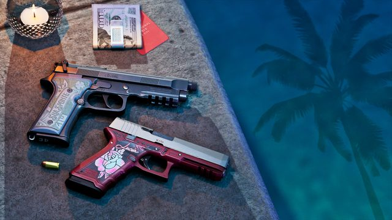
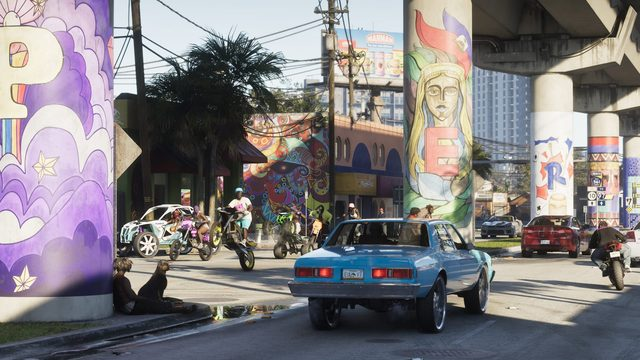

Astuces & préparation
En attendant la sortie, voici ce qu'on sait déjà et comment bien se préparer : 11 guides détaillés, sourcés et mis à jour au fil des annonces.
 © Rockstar Games
© Rockstar GamesGTA 6 : tout ce qu'on sait, en une page
Date, prix, plateformes, carte, héros et nouveautés de gameplay : l'essentiel des infos confirmées, en un seul article.
 © Rockstar Games
© Rockstar GamesSemer la police dans GTA 6 : ce qui change
Six étoiles, témoins, caméras et système de « Heat » : la police te reconnaît désormais. Voici comment brouiller les pistes.
 © Rockstar Games
© Rockstar GamesCombat : les nouvelles commandes à connaître
Roue d'armes à 8 emplacements, bascule rapide entre deux armes, parade au corps-à-corps : ce qu'il faut savoir avant de jouer.

© Rockstar GamesQuelles armes garder sur soi ? Notre guide
Deux fusils et deux pistolets maximum : quelles combinaisons choisir selon la mission, chiffres officiels à l'appui.

© Rockstar GamesQuel véhicule choisir ? Les plus rapides et les plus maniables
Vitesse, accélération, adhérence : les champions parmi les 101 véhicules de retour, d'après les chiffres officiels de Rockstar.
 © Rockstar Games
© Rockstar GamesSurveiller sa jauge d'essence
Le ravitaillement devient un vrai mécanisme de jeu : prévois une pause à la station-service avant les longs trajets.
 © Rockstar Games
© Rockstar GamesPrécommander GTA 6 : le guide pratique
Prix, bonus, préchargement dès le 12 novembre, version physique en code : le guide pour précommander sans mauvaise surprise.
 © Rockstar Games
© Rockstar GamesPréparer sa console pour le 19 novembre
Espace disque, préchargement, mise à jour système, pas de version PC ni de streaming : la check-list technique avant le jour J.
 © Rockstar Games
© Rockstar GamesRevoir les bases avant GTA 6
Changement de personnage, braquages, police : les mécaniques de GTA V à connaître, et ce que GTA 6 modifie.
 © Rockstar Games
© Rockstar GamesLes 6 régions de Leonida, en un clin d'œil
Vice City, Keys, Grassrivers, Port Gellhorn, Ambrosia, Mount Kalaga : le portrait de chaque région, avec la carte interactive.
 © Rockstar Games
© Rockstar GamesStandard ou Ultimate : laquelle choisir ?
20 $ d'écart : ce que l'Ultimate ajoute vraiment, et pour quel type de joueur elle vaut le coup.
 © Rockstar Games
© Rockstar GamesUn easter egg Tommy Vercetti dans le trailer
Un iguane peint aux couleurs de la chemise de Tommy Vercetti aurait été repéré dans la deuxième bande-annonce.